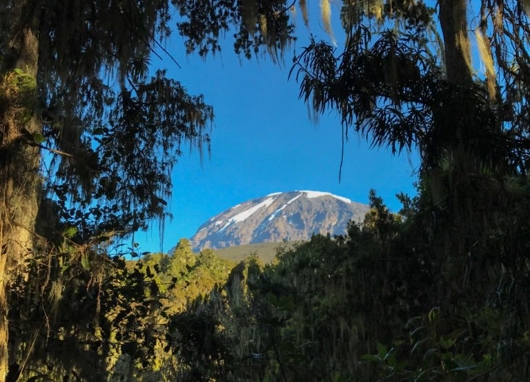

Làm sao để tới đó?
Núi Kilimanjaro ở Tanzania, về phía đông của lục địa Châu Phi. Có nhiều cách để đến đó nhưng theo kinh nghiệm của tôi, cách thuận tiện nhất là đến Sân bay Kilimanjaro (JRO). KLM và Qatar là hai hãng hàng không lớn lần lượt có đường bay thẳng từ Amsterdam và Doha. Từ sân bay Kilimanjaro, bạn có hai lựa chọn: Bạn có thể đến Moshi, thành phố gần núi nhất. Hoặc bạn có thể đến Arusha xa hơn một chút nhưng đó là một thành phố quan trọng hơn nhiều. Taxi là cách duy nhất để đến bất cứ nơi nào bạn chọn và nó sẽ tốn $ 50 đô la cho một trong hai. Nếu bạn đang muốn thực hiện chuyến đi này với chi phí hợp lý nhất có thể, thì điều thuận tiện nhất cần làm là đến đó và dành đêm đầu tiên ở cả hai nơi để bạn có thể bắt đầu chuyến leo núi vào ngày hôm sau, sau khi nghỉ ngơi sau chuyến bay. Tôi đã đến Moshi và tôi giới thiệu nó.